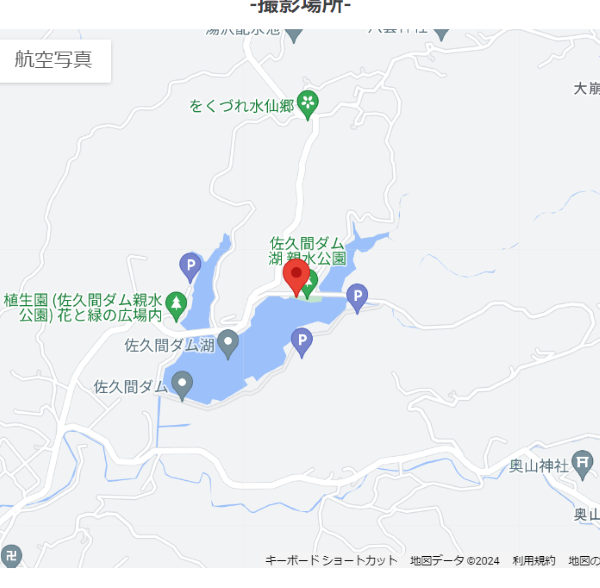
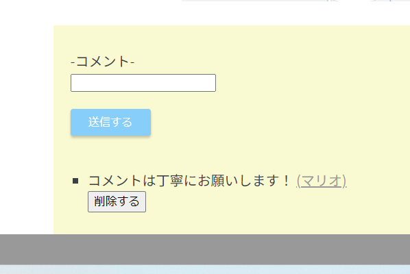

drive_to_photograph（写真投稿APP）
開発環境
Ruby / Ruby on Rails / MySQL / GitHub / Visual Studio Code / AWS
-
概要
制作時間 50時間 URL https://drive-to-photograph.onrender.com ID admin PASS 1114 -
動作テスト
テスト用アカウント
mail test_user@gmail.com PASS testuser1234
OUTLINEアプリケーションの概要
オリジナルアプリケーションとして、自身の趣味を共有をするSNSを開発しました。
主な機能は、ユーザー登録機能、写真投稿機能、コメント機能です。
トップページにアクセスすると、投稿された写真が表示されます。それをクリックすると、他ユーザーが投稿した記事を確認することができます。
ユーザー登録によって、自身の記事の投稿をすることができます。マイページから自身の投稿した記事を確認し、編集・削除を行うことができます。投稿する際、撮影場所を入力すると記事のグーグルマップにピン止めされ見やすくなっています。
また、投稿された記事にコメントをすることが出来るので気に入った投稿があった場合はコメントを行えます。
-
開発に至った経緯
自身の愛車と風景を写真に収めて行く中で、この写真を誰かと共有できないものだろうかという思いがありました。
しかしながらバイク雑誌やSMSの中ではアレンジを加えたバイクや車などが主体となっていることが多かったこともあり、私のような普通のツーリング写真を共有するにはエリアが広く難しいと感じました。
ならば学習した経験を活かし、自身の撮った写真を他ユーザー同士で共有できるそんなアプリを作成することで仲間内でもオンラインでもと楽しめるアプリを作成しました。
-
開発で工夫したこと
1つ目がサービスの使い方や利用規約を含めたページを作成し、ユーザーが新規登録前に理解できるように努めたことです。これはgem high_voltageという機能を使い、静的ページを作成、新規登録してもらう前にサービスの注意書きを見てもらうことで事前に理解してもらえればと思ったからです。
2つ目がグーグルマップのピン機能を導入することで他ユーザーがどこでこの撮影が行われたのかを見やすくしました。グーグルマッププラットフォームの基本機能のピン止め機能をデータベースに保存し、投稿した写真と共に見やすくしたいと考えたからです
-
今後実装したいと思っていること
コメント削除機能を実装したいと考えています。
気に入った写真にコメントを記述できる機能を付けましたが、もし自分自身がもう一度見直したときに違和感等があった場合に削除できる機能があればよいと考えているからです。
写真の投稿者側としても違和感のあるコメントが削除されれば、今後も投稿しやすくなるのではと思っているので実装したいと思います。